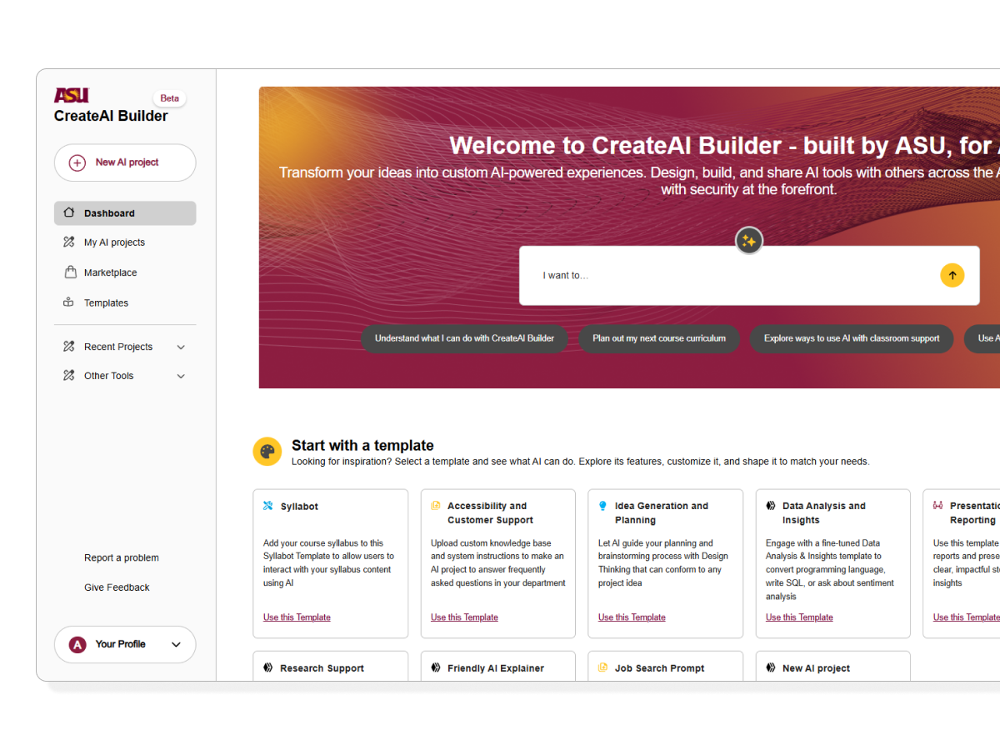

Use when a single sentence from the article is worth stopping for. Big Shoulders, red left rule. Works best for conclusions or reframes.
the constraint isn't the limitation. it's the feature.
— Why I Start in High-Fidelitya grey box labelled "hero image" never lies to you, and that's exactly the problem.
A callout with intent. Heavier than a plain callout because of the typed eyebrow label. Use for key observations, research findings, or "the thing I'd tell a junior designer."
Users didn't abandon the tool because it was complex. They abandoned it because complexity appeared before they understood the value. Sequence matters as much as simplicity.
Bounce rate dropped from 80% to 22% after moving the "why this matters" framing to the first screen — before any input was requested.
Two-column grid for before/after, old/new, or option A/B. Columns get header labels. Works for text, code, or short lists. Collapses to single column on mobile.
Big numbers. Use Big Shoulders Display at maximum size. Always anchor a number with a label — never a number alone. Wrap multiple stats in .stat-row.
220K+
enterprise users
80%
original bounce rate
3×
safety recall improvement
58→81%
profile completion rate
Numbered process for case studies, how-tos, and methodology sections. Number in a primary-blue outlined circle. Each step has a title and an optional description.
Understand before designing
Spend the first week reading support tickets and watching session recordings. Not talking to stakeholders — watching users fail.
Define the one question
Not "how do we improve onboarding" — too broad. "Why do users leave before completing step 3?" — answerable.
Start high-fidelity
Design in the system. Real type, real tokens. A screen that costs an afternoon to build and two minutes to throw away.
Ship, measure, iterate
Ship early. Measure the one thing you set out to change. Iterate based on what the data tells you, not what you hoped it would say.
Images with captions. The image gets a rounded container; the caption sits below in secondary text, italic. Use for screenshots, diagrams, and case study visuals.

Visual divider between major sections. Use with a label to name the transition; use without for a clean break. The label is optional — just omit the .section-break-label span.
Pale inline fill for emphasis beyond <b>. Works like a marker — for terms being defined, key phrases in a conclusion, or the one thing in a paragraph worth re-reading.
the key finding was simple: users didn't leave because the product was hard. they left because the complexity appeared before the value did. sequence, not simplicity, was the fix.
every interface decision compounds. a 3px radius increase on a button is noise. a consistent 8px spacing rhythm across 200 components is a system.
End-of-article or end-of-section summary. Outlined border, no fill. Heavier label than insight. Use once per article, at the close.
Fidelity isn't polish. It's the fastest way to find out if an idea survives contact with reality. Start high, build from the system, and let the tokens do the translation work.
Show people what it will actually look like. Everything else is negotiable.
How components read together — a realistic article closing using stat → insight → pull quote → takeaway.
81%
profile completion (up from 58%)
↓58%
support tickets in 30 days
The numbers improved, but the qualitative feedback revealed something more interesting: users reported feeling trusted by the product for the first time. Removing the interrogation didn't just reduce friction — it changed the emotional frame.
"it stopped feeling like a form and started feeling like a tool."
— user interview, week 4Context before configuration. Users complete setup willingly when they understand what they're setting up. The sequence is the design.